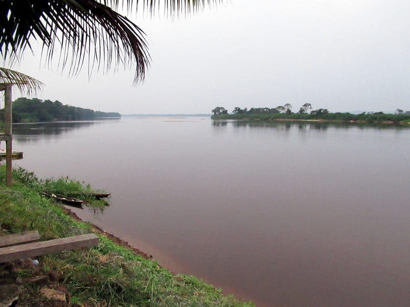

Quatre nouveaux quartiers périphériques seront raccordés au réseau d'eau potable dans le cadre du plan triennal d'amélioration du cadre de vie 2025–2028.
Le projet prévoit l'extension des canalisations, l'installation de bornes-fontaines collectives et la pose de branchements individuels pour les foyers qui en feront la demande. Plusieurs centaines de ménages bénéficieront ainsi d'un accès à une eau de qualité, plus proche et plus sûre.
Réduire les corvées d'eau
Pour de nombreuses familles des quartiers concernés, l'approvisionnement reposait jusqu'ici sur des points d'eau éloignés. Le raccordement au réseau réduira les distances à parcourir, soulagera notamment les femmes et les enfants, et limitera les risques de maladies d'origine hydrique.
Menés en lien avec la société concessionnaire, les travaux s'accompagneront de campagnes de sensibilisation à la bonne gestion de l'eau et à l'entretien des installations collectives.